AKG（ エーケージー（アーカーゲー））
1947年創立のヘッドフォン、マイクロフォンを得意とするオーストリアの音響機器メーカー（＊）。アナログディスク全盛時にはカートリッジも作っていた。AKGとは、“アコーステック・アンド・シネマ・エクイプメント・リミテット”（ドイツ語で Akustische und Kino-Geraete Gesellschaft m.b.H）の略で、ドイツ風に「アーカーゲー」と呼ばれることが多い。
＊サイト開設時の状況で、1994年以降、「親会社」となっているハーマン・インターナショナルが2017年にサムスン傘下になって以降、ウィーンの拠点は閉鎖されたそうです。
ヘッドフォンに関しては1960年代にはすでに輸入されていたが、元来プロ用機材メーカーとしての性質が強かったためか、そのころのモデルについては詳細不明な部分が多い。Stereo Sound YEAR BOOK 1973ではマイクロフォンは記載されているが、ヘッドフォンについては記載が無い。ある程度安定した情報が入手できたのは、パイオニア・エンタープライズが代理店となった、1970年代後半以降からである。1960年代から70年代までの代理店は阪田商会、1975年頃よりパイオニア・エンタープライズが加わった。この時期にはマイクロフォンについてはフォステクス（フォスター）が平行して代理店となっていたこともある。1980年代にはエーケージー・ジャパン・サービスが代理店となり総括して扱うようになり、1990年代に�慨CJ・AKGを経て、現在の代理店ハーマン・インターナショナルとなった。しかし業務用のルートでは、別の代理店があり、1980年代では阪田商会やサカタエンジニアリング、さらにヒビノ（ここは現在も継続中）が録音機材系のカタログでは掲載されていたし、その後スチューダー・ジャパンの扱いとなっているものもある。2019年には「サウンドハウス」も代理店に加わった。
AKG（
エーケージー（アーカーゲー））の製品を以下のように分類する。（この分類は個人的な意見で、メーカーの分類ではありません）
�T.阪田商会時代の製品（〜1975頃）
この時代の機種については、不明な点が多いがオーディオ誌のバックナンバーをさらって見かけたものを記載する。K140カルダンは現在のK141MK2につながるオリジナルモデルであり、またそれ以前の業務用の性質が強いモデルから現在の観賞用モデルに移行した最初のモデルなのかもしれない。なお、当時はユニット背面のスリットがない密閉構造だった。その他1972年の「ステレオ」誌によると、K60というモデルが輸入されていた形跡がある。
K20 K50 K120 K150 K140カルダン K180
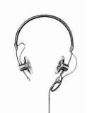
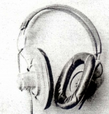
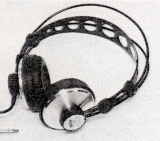
(左 K50 中央 K150 右 K140カルダン)
�U.パイオニア・エンタープライズ時代の製品（1975〜1980年頃）
1975年の後半より、パイオニア・エンタープライズが代理店に加わり、以降Stereo
Sound YEAR BOOK(HifFi STEREO GUIDE)
に常時掲載されるようになった。K240は６枚のパッシブ振動板を持つセミオープンのモニターモデル。2000年過ぎまで製造されたK240Monitor等のオリジナルモデル。なおK240Studio以降の現行モデルにはパッシブ振動板は採用されていない。K140Sは背面のスリットによりセミオープンエア型となったK140系統のモデル。K340はK240系統の６枚のパッシブ振動板を持つダイナミック型ユニットとエレクトレット・コンデンサー型の高音用ユニットを持つ２ウェイ型。同様のコンセプトの２ウェイ型にK4、K145がある。
K140/4 K140 K160 K240
K40 K80cockpit K140S K141 K241
（２ウェイ型） K340
（番外） K-140（ワイヤレス）
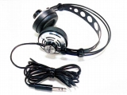 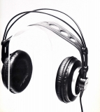 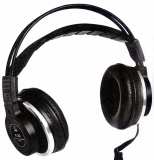
�V.エーケージー・ジャパン・サービス時代の製品（1980年頃〜1990年代始め）
1980年頃より、エーケージー・ジャパン・サービスが代理店となった。一部の機種で価格改定があったものの、パイオニア・エンタープライズ時代の末期モデルをすべて引き継ぎ、販売を続けた。
�@小型・軽量機
1982年末より従来モデルより小型・軽量化（本体重量で100g未満）したモデルの販売を始めた。
（２ウェイ型） K4
（注 K2も存在するが日本に輸入されたかは不明）
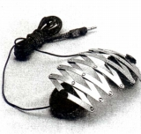 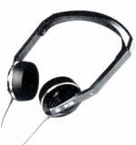
�A更新モデル
小型・軽量化モデルは短命に終わり、その代替モデルも含めて、従来機の後継・発展モデルの発売を行った。K45、135、145はK40、80等の流れを汲む音楽鑑賞用モデル。K141Monitor、K240Monitorは2000年過ぎまで続くロングランモデルとなった。
K45 K135 K141Monitor K240Monitor K240DF K260
（２ウェイ型） K145
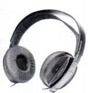
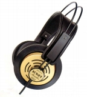
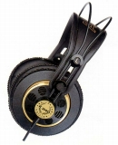
(左 K135 中央 K141Monitor 右 K240Monitor)
�Bダブルユニットモデル
ドライバーユニットを片チャンネル2本使用したシリーズ、インピーダンスも75Ω*と従来モデルよりは扱いやすくなった。密閉型のK270、オープン型のK280は垂直に配置しているが、水平に配置しサラウンド対応としたのがK290。従来のK240系とK500以降のKシリーズにはされたシリーズで、K280は短命なモデルとなったが、Kシリーズに密閉型がなかった為、K270は2000年過ぎにK271がデビューするまで販売が続いた。
*インピーダンス K290は2チャンネルで使うと75Ωだがサラウンドモードで使う場合は150Ωとなる
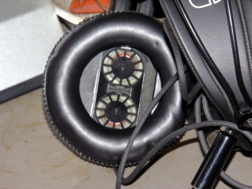
(管理人所有機K270のユニット）
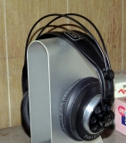
(K280)
�W.SCJ・AKG時代の製品（1990年代始め〜1995年頃？）
正式な変更の時期はわからないが、1993年の時点ではSCJ・AKGが代理店となっていた。
�@小型・軽量機
1980年代のK3を思わせるようなデザインの小型機
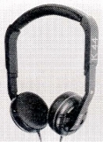
(K44)�AKシリーズ
OFCケーブルやASDFと呼ぶ着脱可能なアコースティックフィルターを採用したシリーズ。K140/240系統とは完全に別デザインで今日の主力であるK701/702系統の最初のモデル群。またこのシリーズから、同社では「バリオジャック」と呼んだ6.3mm/3.5mmの標準/ミニ2ウェイジャックが大型モデルでも標準仕様となった。なお、このシリーズは販売期間中に大幅な値下げがあった（例 K500
\47,500→\30,000)。オークション等では大抵改訂前の高い価格で紹介されている。
K100 K200 K200MK�U K300 K300Monitor K400 K500
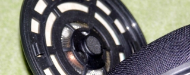
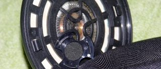
(写真は管理人所有のK500 左がASDFを装着した状態、右がはずした状態）
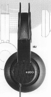
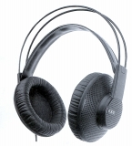
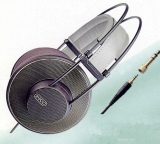
(左 K200 中央 K300 右 K500)�BPERFORMERシリーズ
K100の流れを受け継ぐ軽量機。
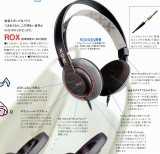
(ROX)�Cその他
K1000はヘッドフォンとはいいがたい部分もある、フルオープンの超高級モデル。K141Monitor/2は極短期間だけ紹介された。
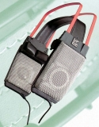
(K1000)�X.ハーマン・インターナショナル、スチューダー・ジャパン時代の製品（1995年頃？〜）
正式な変更の時期はわからないが、1997年の時点ではハーマン・インターナショナル、スチューダー・ジャパンが代理店となっていた。観賞用がハーマン・インターナショナル、業務色が強いもの(K141Monitor、240Monitor，270等）がスチューダー・ジャパンの扱いとなった。(*)
＊K141Monitor、240Monitorはハーマン・インターナショナルでも平行して扱われていたようだ。
�@NEW
Kシリーズ
バリモーションシステム採用後の機種。この振動板は後にK140/240系統にも採用され、AKGの中級機以上の標準的なテクノロジーとなる。2000年代にはK601、K701が登場し、現在のK702に続く。
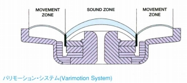
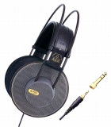
(K501)�A入門機他
PERFORMERシリーズの後継の入門機種。K55/66はヨーロッパのデザインプロダクション「Peschke &
Skone」による兄弟モデル。FUN LINEはPERFORMERシリーズの流れを汲むAKG創立50周年（1997年）記念モデル。
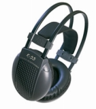
(K55)